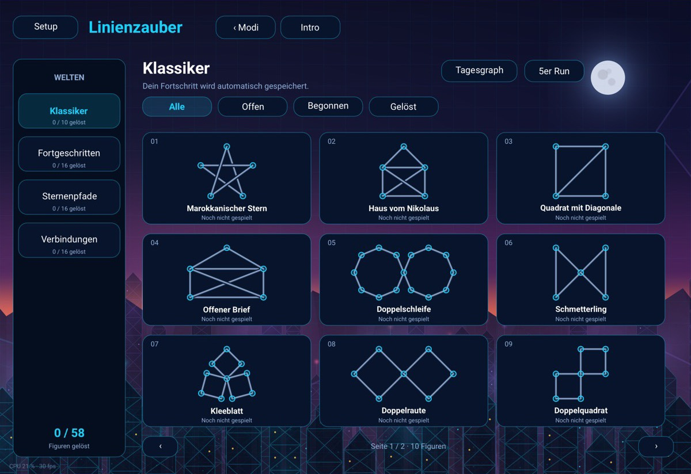
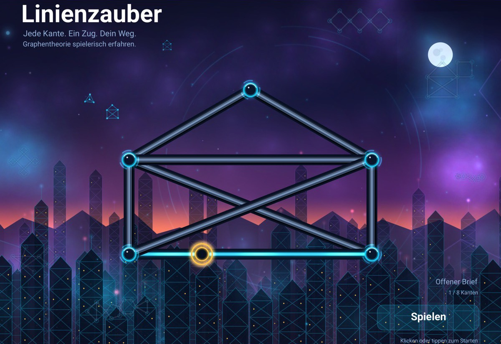
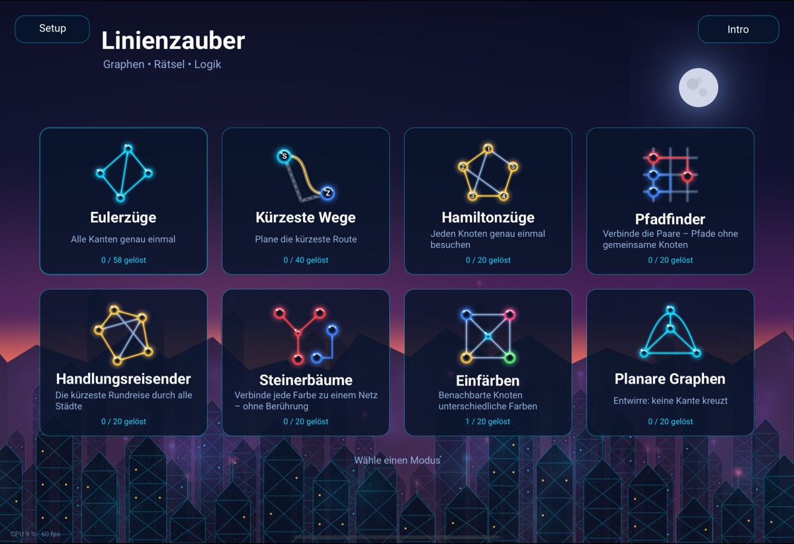
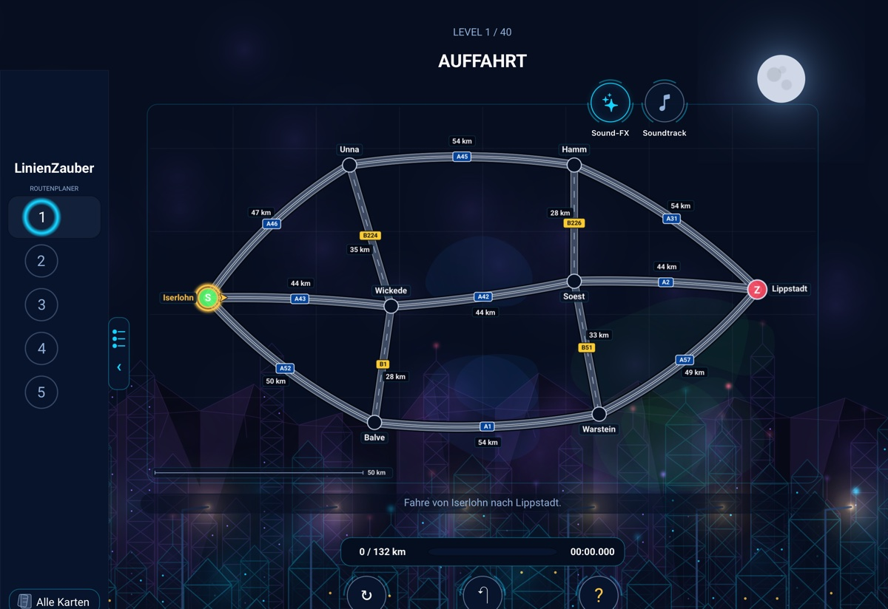
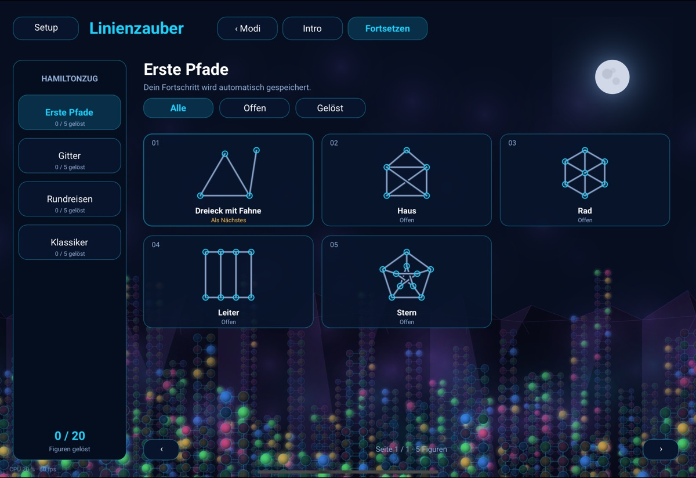
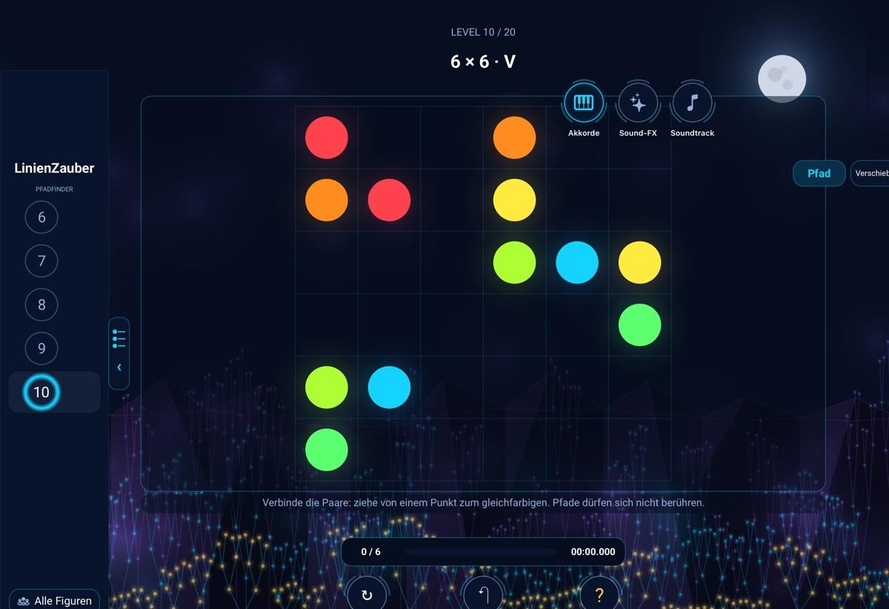
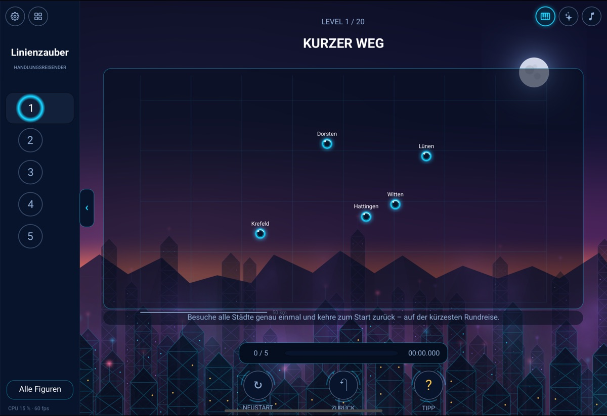
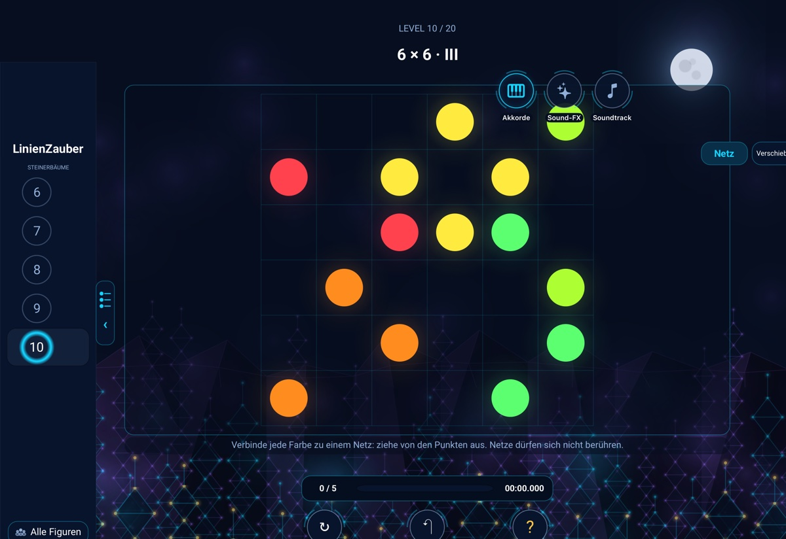
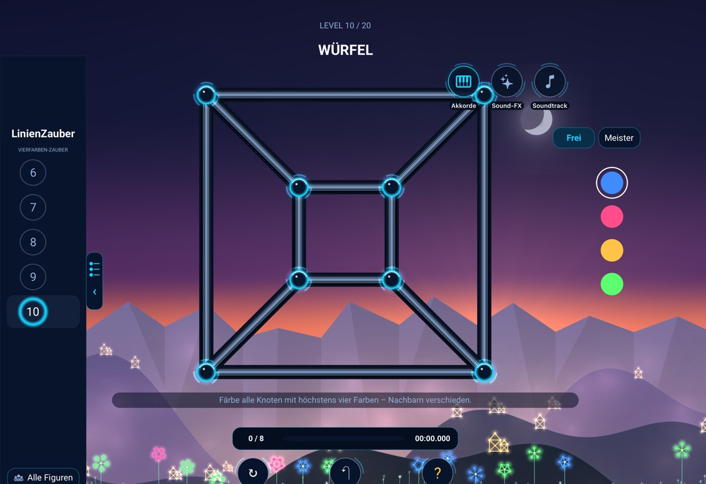
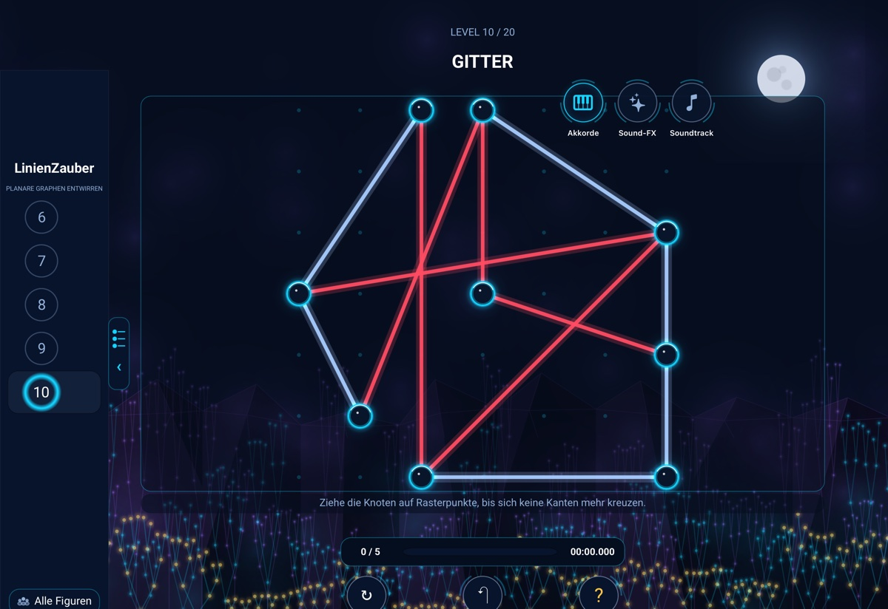

Eulerzüge
58 Figuren in vier Welten: Klassiker, Fortgeschritten, Sternenpfade und Verbindungen. Benutze jede Kante genau einmal. Kreuzungen sind keine Knoten, und LinienZauber warnt dich, bevor du in eine Sackgasse läufst.
Ein Denkspiel für Mac, iPhone und iPad
Jede Kante. Ein Zug. Dein Weg.
Graphentheorie spielerisch erfahren.

LinienZauber ist ein ruhiges Denkspiel für Mac, iPhone und iPad. Leuchtende Glasröhren verbinden Knoten zu Figuren – vom Haus vom Nikolaus bis zum Sternenpfad. Deine Aufgabe klingt einfach: Zeichne jede Linie genau einmal, ohne abzusetzen. Dahinter steckt echte Mathematik, die du ganz nebenbei erlebst.

Acht Rätselarten aus der Graphentheorie, jede mit eigener Welt, eigener Musik und eigener Figurenübersicht.

58 Figuren in vier Welten: Klassiker, Fortgeschritten, Sternenpfade und Verbindungen. Benutze jede Kante genau einmal. Kreuzungen sind keine Knoten, und LinienZauber warnt dich, bevor du in eine Sackgasse läufst.

40 Straßenkarten wie ein Routenplaner, die zweite Hälfte auf echten deutschen Regionen von der Ruhr bis Thüringen: Eine Straße ist so lang, wie sie gezeichnet ist. Plane die kürzeste Route von S nach Z, mit Stopps unterwegs und um Baustellen herum – mit Haptik, Hupe und Motorsound.

20 Graphen vom Dreieck bis zum Dodekaeder aus Hamiltons eigenem Spiel. Besuche jeden Knoten genau einmal – manchmal mit Rückkehr zum Start. Eine Sackgasse erkennt LinienZauber, bevor du sie betrittst.

20 Felder bis 8 × 8 mit Paaren gleicher Farbe. Verbinde jedes Paar durch einen Pfad, ziehe und verschiebe Kurven nach Belieben, ohne dass sich zwei Pfade berühren. Jedes Level hat genau eine Lösung.

20 Rundreisen durch echte deutsche Städte, von fünf bis vierzehn Orten. Besuche jede Stadt einmal und fahre zurück zum Start – auf der kürzesten Rundreise. Wer immer zur nächsten Stadt fährt, verliert.

20 Raster mit Bauteilen und Pins in mehreren Farben. Verbinde alle Pins gleicher Farbe zu einem minimalen, verzweigten Netz – ziehe, verschiebe und begradige Leitungen wie beim PCB-Layout auf einer echten Platine.

20 Level mit vier Neonfarben. Färbe die Knoten so, dass keine Kante zwei gleiche Farben verbindet. Als Farben-Meister schaffst du es mit der kleinstmöglichen Zahl an Farben.

20 verknotete Graphen. Verschiebe nur die Knoten, bis sich keine zwei Linien mehr kreuzen.
Jede gezogene Kante spielt einen Akkord, jede Figur ihre eigene Akkordfolge. Jeder Modus hat einen eigenen Klavier-Soundtrack, dezente Effekte und einen „Geschafft“-Klang – Akkorde, Effekte und Soundtrack lassen sich einzeln schalten.
Eine Stadt aus „Haus vom Nikolaus“-Hochhäusern am Abend, Dörfer und Blumenwiesen bei Sonnenaufgang und ein langsamer Wechsel von Tag und Nacht mit Tiefenwirkung.
Jedes Level wird vor dem Spiel mathematisch geprüft: Färben und Entwirren mit einem Solver, die Routen und Rundreisen durch Vollsuche, die Pfadfinder-Felder auf genau eine Lösung. Jedes Level ist lösbar.
Für Finger, Apple Pencil, Maus und Tastatur. Fortschritt, Bestzeiten und angefangene Züge werden gespeichert.
Das ganze Spiel gibt es auf Deutsch und Englisch.
Ohne Zeitlimit: In den Eulerzügen kostet Zurück fünf Sekunden auf der Uhr, ein Tipp dreißig – und jeder Neustart behält deine Bestzeit.
Jedes gelöste Level bringt Punkte, schnelle Lösungen bringen mehr. Es gibt kein Zeitlimit, und Punkte gehen nie verloren.
Jedes gelöste Level bringt 100 Punkte. Dazu kommt ein Punkt für jede volle Sekunde, die deine Bestzeit unter 100 Sekunden bleibt. In 37 Sekunden gelöst sind das 163 Punkte.
Die Uhr startet erst, wenn du die erste Kante setzt oder den ersten Zug machst. Sie hält an, wenn das Spiel in den Hintergrund geht oder das Setup offen ist, und läuft mit dem nächsten Zug weiter. Für jedes Level zählt deine beste Zeit: Schneller gelöst steigen deine Punkte, ein langsamerer Versuch kostet nichts.
In den Eulerzügen kommt Strafzeit auf die Uhr: 10 Sekunden für einen ungültigen Zug, 5 für Zurück und 30 für einen Tipp. Ohne Strafzeit ist die Lösung perfekt. In den anderen Modi zählt die reine Zeit.
Beide gehören zu den Eulerzügen. Der Tagesgraph ist einen Tag lang für alle derselbe. Im 5er Run löst du fünf Figuren nacheinander, und die Zeiten werden addiert. Ohne Strafzeit zählt der Run zusätzlich als perfekt.
Es gibt 20 Erfolge: für das erste Level jedes Modus, für alle Level eines Modus, für 10, 50 und 100 Level und für das ganze Spiel.
Mit Game Center stehen deine Punkte je Modus in einer Bestenliste, dazu Tagesgraph und 5er Run. Ohne Game Center zählt alles genauso, du siehst es unter Fortschritt.